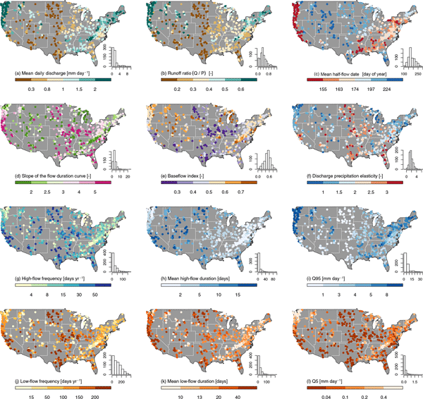
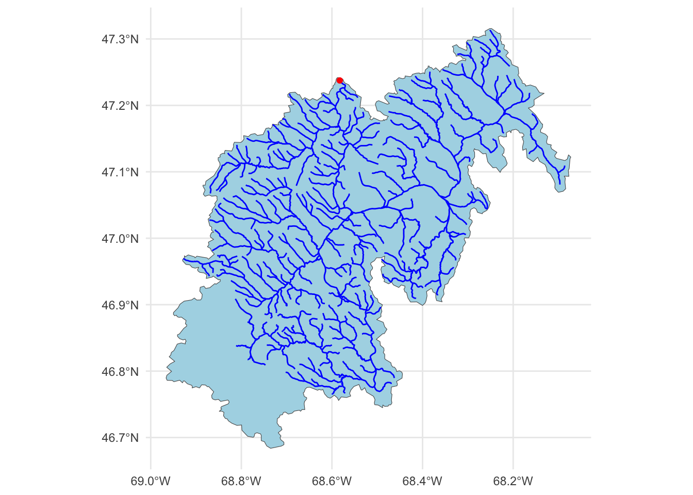
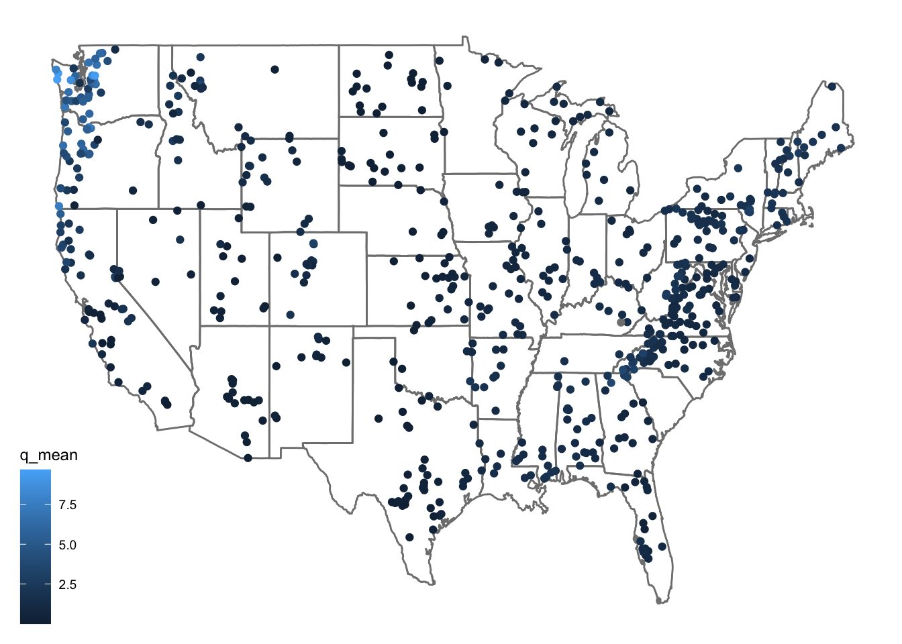
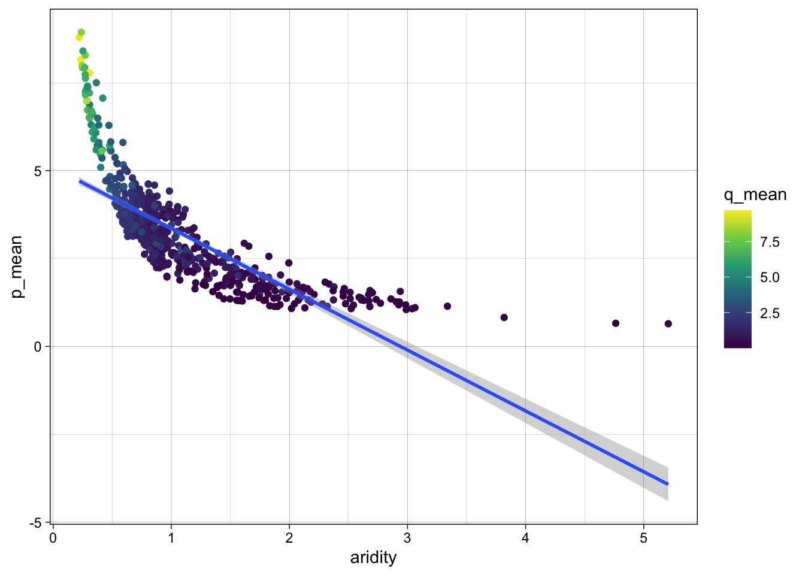
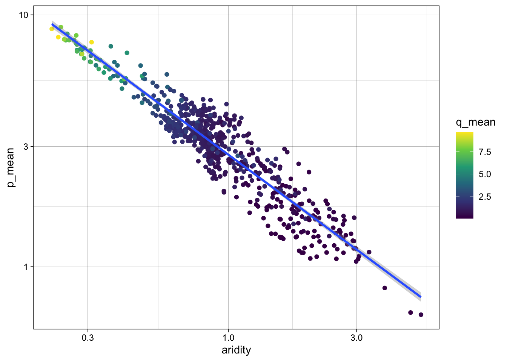
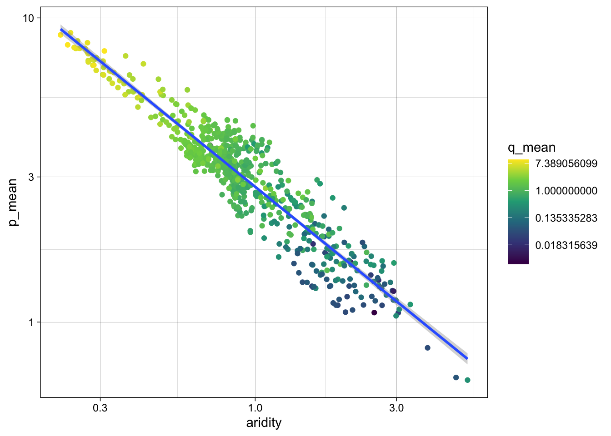

Lab 6: Machine Learning in Hydrology
Using Tidymodels & CAMELS Data
Introduction
In this lab, we will explore predictive modeling in hydrology using the tidymodels framework and the CAMELS (Catchment Attributes and Meteorology for Large-sample Studies) dataset.
What is tidymodels?
tidymodels is an R framework designed for machine learning and statistical modeling. Built on the principles of the tidyverse, tidymodels provides a consistent and modular approach to tasks like data preprocessing, model training, evaluation, and validation. By leveraging the strengths of packages such as recipes, parsnip, and yardstick, tidymodels streamlines the modeling workflow, making it easier to experiment with different models while maintaining reproducibility and interpretability.
What is the CAMELS dataset?
The CAMELS dataset is a widely used resource in hydrology and environmental science. It provides data on over 600 river basins across the United States, including meteorological forcings, streamflow observations, and catchment attributes such as land cover, topography, and soil properties. This dataset is particularly useful for large-sample hydrologic studies, enabling researchers to develop and test models that generalize across diverse climatic and physiographic conditions.
Lab Goals
In this lab, you will:
- Learn how to programatically download and access data.
- Practice using
tidymodelsfor predictive modeling. - Train and evaluate models to predict mean streamflow across the country.
- Interpret and compare model performance using tidy workflows.
By the end of this 2 week lab, you will have hands-on experience applying machine learning techniques to real-world data, helping to bridge the gap between statistical modeling and environmental science.
Lab Set Up
- Make a new R project where you want this work to take place.
- Create a Quarto document called
lab6.qmdin the project folder. - Create a
datadirectory in your project folder. - Instantiate a git archive with usethis::use_git()
- Connect it to a Github repository with usethis::use_github()
Let’s start by loading the necessary libraries for this lab (you may need to install some!):
library(tidyverse)
library(tidymodels)
library(powerjoin)
library(glue)
library(vip)CAMELS Dataset
The CAMELS dataset contains a wealth of information on hydrologic variables, meteorological forcings, and catchment attributes for over 500 self drainging river basins in the United States. In this lab, we will focus on predicting the mean streamflow for these basins using the basin characteristcs associated with each. CAMELS hydrology data has been widely used to calibrate, train, and analyze models in hydrology and machine learning:
⚙️ Calibrating Hydrologic Models – Used for parameter tuning in models like SAC-SMA, VIC, and HBV, improving regional and large-sample hydrology studies.
🤖 Training Machine Learning Models – Enables deep learning (e.g., LSTMs) and regression models for streamflow prediction, often outperforming traditional methods.
🔍 Understanding Model Behavior – Helps assess model generalization across catchments, uncertainty analysis, and the role of catchment attributes.
📊 Benchmarking & Regionalization – Supports large-scale model comparison and parameter transfer to ungauged basins.
🔄 Hybrid Modeling – Used in ML-enhanced physics-based models for bias correction and improved hydrologic simulations.
Notable studies include Kratzert et al. (2019), demonstrating LSTMs outperforming conceptual models in streamflow prediction. The data is hosted by NCAR here. Navigating down to the “Individual Files” section will take to to a list of data avialbe for download. As part of this lab, we are going to explore how to programatically download and load the data into R.
Data Download
The root URL for all data seen on the “Individual Files” page is:
root <- 'https://gdex.ucar.edu/dataset/camels/file'Near the bottom, there are many .txt files that contain the data we want. Some hold climate data for each basin, some hold geology data, some hold soil data, etc. Lets create a vector storing these data types:
types <- c("clim", "geol", "soil", "topo", "vege", "hydro")
glue
The glue package provides an efficient way to interpolate and manipulate strings. It is particularly useful for dynamically constructing text, formatting outputs, and embedding R expressions within strings.
Key Features of glue:
- String Interpolation: Embed R expressions inside strings using {}.
- Improved Readability: Eliminates the need for cumbersome paste() and sprintf().
- Multi-line Strings: Easily handle multi-line text formatting.
- Safe and Efficient: Optimized for performance and readability.
Basic Usage
- To use glue, you need to load the package and then call the glue() function with the desired string template. You can embed R expressions within curly braces {} to interpolate values into the string.
class <- "ESS 330"
year <- 2024
glue("We are taking {class} together in {year}")We are taking ESS 330 together in 2024Multiples
- You can also use glue to interpolate multiple values at once
classes <- c("ESS 330", "ESS 523c")
glue("We are taking {classes} together in {year}")We are taking ESS 330 together in 2024
We are taking ESS 523c together in 2024- Using
glue, we can construct the needed URLs and file names for the data we want to download:
remote_files <- glue('{root}/camels_{types}.txt')
# Dowload the data to the data directory
local_files <- glue('data/camels_{types}.txt')- Now we can download the data:
walk2comes from thepurrrpackage and is used to apply a function to multiple arguments in parallel (much like map2 works over paired lists).
Here, we are asking walk2 to pass the first element of remote_files and the first element of local_files to the download.file function to download the data, and setting quiet = TRUE to suppress output. The process is then iterated for the second element of each vector, and so on.
walk2(remote_files, local_files, download.file, quiet = TRUE)Once downloaded, the data can be read it into R using readr::read_delim().
# Read and merge data
camels <- map(local_files, read_delim, show_col_types = FALSE) We will use the powerjoin package to merge the data into a single data frame. powerjoin is a flexible package for joining lists of data.frames. It provides a wide range of join types, including inner, left, right, full, semi, anti, and cross joins. powerjoin also supports multiple join conditions, non-equi joins, and fuzzy joins, making it a versatile tool for data manipulation and analysis.
In this case, we are join to merge every data.frame in the list (n = 6) by the shared gauge_id column.
camels <- power_full_join(camels ,by = 'gauge_id')
Note
Alternativly, we could have read straight form the urls. Strongly consider the implications of this approach as the longevity and persistence of the data is not guaranteed.
# Read and merge data
camels <- map(remote_files, read_delim, show_col_types = FALSE) |>
power_full_join(by = 'gauge_id')Getting the documentation PDF
Lastly, we can download the documentation PDF which provides a descriptions for the various columns as many are not self-explanatory. Here, because there is a single file, we can use download.file directly.
download.file(glue('{root}/camels_attributes_v2.0.pdf'), 'data/camels_attributes_v2.0.pdf')Go to your data directory and open the PDF to see the attributes of the data. It will be very helpful through the remainder of this lab!
What’s in the data?
Each record in the CAMELS dataset represents a unique river basin, identified by a USGS NWIS gauge_id. The dataset contains a mix of continuous and categorical variables, including meteorological forcings, catchment attributes, and streamflow observations. The data we are looking at are basin level summaries for the contribuitng drainage area of each gauge. For example, if we looked at row 1 of the data (gage: rcamels$gauge_id[1]) all of the values are the areal average for the drainage basin seen below, while the flow metrics are assoicate with the outlet gage (in red):
basin <- dataRetrieval::findNLDI(nwis = camels$gauge_id[1],
nav = "UT",
find = c("basin", "flowlines"))
ggplot() +
geom_sf(data = basin$basin, fill = "lightblue") +
geom_sf(data = basin$UT_flowlines, color = "blue") +
geom_sf(data = basin$origin, color = "red") +
theme_minimal()
Exploratory Data Analysis
Question 1:
Using the camels data.frame, make a map of the sites. Use the borders ggplot function to add state borders to the map.
ggplot(camels, aes(x = gauge_lon, y = gauge_lat, color = q_mean)) +
borders("state", colour = "gray50") +
geom_point() +
theme_linedraw()
Question 2:
For this initial analysis, lets look at the realtionship that aridity, rainfall and mean flow. First, lets make sure there is not significant corrlation between these variables.
cor(drop_na(select(camels, aridity, p_mean, q_mean))) aridity p_mean q_mean
aridity 1.0000000 -0.7550090 -0.5817771
p_mean -0.7550090 1.0000000 0.8865757
q_mean -0.5817771 0.8865757 1.0000000As expected, there is a strong correlation between rainfall and mean flow, and an inverse correlation between aridity and rainfall. While both are high, we are going see
We are going to learn a few new things here. First, we are going to use the scale_color_viridis_c() function to color the points by the q_mean column. There are name
ggplot(camels, aes(x = aridity, y = p_mean)) +
geom_point(aes(color = q_mean)) +
geom_smooth(method = "lm") +
scale_color_viridis_c() +
theme_linedraw()`geom_smooth()` using formula = 'y ~ x'
Ok! so it looks like there is a realtionship between aridity and rainfall but it looks like an exponential decay function.
To better see this, we are going to log scale the x and y axes. This will help us see the spread in the data better we are going to use the scale_x_log10() and scale_y_log10() functions to make the x and y axes log scaled.
ggplot(camels, aes(x = aridity, y = p_mean)) +
geom_point(aes(color = q_mean)) +
geom_smooth(method = "lm") +
scale_color_viridis_c() +
scale_x_log10() +
scale_y_log10() +
theme_linedraw()`geom_smooth()` using formula = 'y ~ x'
Great! We can see a log-log relationship between aridity and rainfall. This is a common relationship in hydrology and is often used to estimate rainfall in ungauged basins. Further, the linear
Last, it still seems there is a tight spread in the
ggplot(camels, aes(x = aridity, y = p_mean)) +
geom_point(aes(color = q_mean)) +
geom_smooth(method = "lm") +
scale_color_viridis_c(trans = "log") +
scale_x_log10() +
scale_y_log10() +
theme_linedraw()`geom_smooth()` using formula = 'y ~ x'
Model Building
Lets start by splitting the data
First, we set a seed for reproducabilty, then transform the q_mean column to a log scale.
we split the data into a training and testing set. We are going to use 80% of the data for training and 20% for testing.
#
set.seed(123)
# Bad form to perform simple transformations on the outcome variable within a
# recipe. So, we'll do it here.
camels <- camels |>
mutate(logQmean = log(q_mean))
# Generate the split
camels_split <- initial_split(camels, prop = 0.8)
camels_train <- training(camels_split)
camels_test <- testing(camels_split)